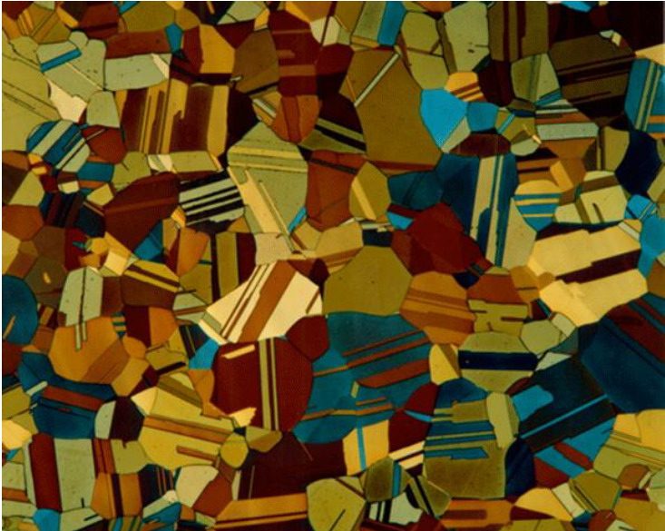

The primary objective of the physical Metallurgy & Metallography Lab:
* The primary objective of this lab is to study the microstructure of different materials (metals & alloys etc..). By studying & analyzing the microstructures of materials we can easily understand the properties & performances of those materials..

The primary objectives of this experiment.
To introduce the difference processes that involved to know the microstructure of materials. And also about the experiment, equipment & specifications. And how to differentiate the materials like metallic, ceramic & polymeric as we can focus more on metallic materials..
First of all,What is a microstructure?
A structure provaise in microscale
To know about microstructure, First we need to know about materials
Now materials can be of many types:
- metallic
- ceramic
- polymeric materials
- composite materials
- In this lab,we work mostly on Iron (Fe),and non-ferrous alloys like Al,Mg,Ti,Cu
,To see microstructure of a material microscopes like optical microscope and Electron microscope can be used.
see to know more details and how it can be done.